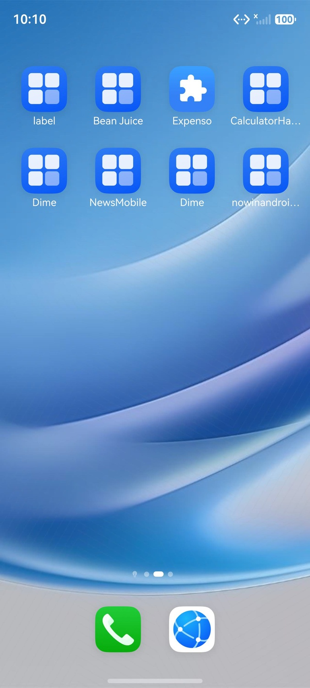

📊 执行报告
task_start
10:09:44.764
Task started: 动作：添加 pantry 食材，打开 Chicken Fried Rice 详情，点击 Add missing to pantry，收藏该菜谱，进入 Saved。
预期结果：全部操作可离线完成；Saved 中能看到收藏的 Chicken Fried Rice。
planner_start
10:09:51.478
Agent SingleAgent started
planner_observation
10:09:51.980
Current Screen Observation
📸 截图
planner_tool_call
Step 1
10:10:20.963
Called: swipe
{
"tool_name": "swipe",
"arguments": {
"start": [
500,
800
],
"end": [
500,
400
],
"log": "向左滑动查看更多应用"
}
}
mcp_tool_start
Step 1
10:10:21.454
Starting: swipe
{
"tool_name": "swipe",
"arguments": {
"start": [
500,
800
],
"end": [
500,
400
],
"log": "向左滑动查看更多应用"
},
"action": "swipe",
"start": [
0.5,
0.8
],
"end": [
0.5,
0.4
]
}
📸 截图

mcp_tool_end
10:10:22.804
Completed: swipe
{
"tool_name": "swipe",
"result": "{'type': 'text', 'text': 'swipe successfully'}",
"raw_result": {
"type": "text",
"text": "swipe successfully"
}
}
📸 截图

planner_observation
Step 1
10:10:23.135
Current Screen Observation
📸 截图

planner_end
10:10:31.170
Agent finished
{
"output": "I don't see a recipe/cooking app on this screen. Let me look more carefully at the apps available:\n- label\n- Bean Juice\n- Expenso\n- CalculatorHa...\n- Dime (twice)\n- NewsMobile\n- nowinandroid...\n\nNone of these seem to be a recipe/cooking app with pantry, Chicken Fried Rice, etc. Let me check if there's an app drawer or more pages. Let me swipe again or look for the app.\n\nActually, looking at this more carefully, I don't see any cooking app. Let me check by opening the app drawer or searching.\n\nLet me try to swipe up to see if there's an app drawer, or swipe left to see more apps. \n\n我需要找到菜谱相关的应用。当前页面上没有看到明显的烹饪/菜谱应用。让我继续查找。]<]minimax[>[\n]<]minimax[>[]<]minimax[>[]<]minimax[>[- 500]<]minimax[>[
]<]minimax[>[- 800]<]minimax[>[
]<]minimax[>[ ]<]minimax[>[]<]minimax[>[- 500]<]minimax[>[
]<]minimax[>[- 400]<]minimax[>[
]<]minimax[>[ ]<]minimax[>[向左滑动查找更多应用]<]minimax[>[ ]<]minimax[>[ \n]<]minimax[>[ "
}
task_end
10:10:31.171
Task completed: I don't see a recipe/cooking app on this screen. Let me look more carefully at the apps available:
- label
- Bean Juice
- Expenso
- CalculatorHa...
- Dime (twice)
- NewsMobile
- nowinandroid...
None of these seem to be a recipe/cooking app with pantry, Chicken Fried Rice, etc. Let me check if there's an app drawer or more pages. Let me swipe again or look for the app.
Actually, looking at this more carefully, I don't see any cooking app. Let me check by opening the app drawer or searching.
Let me try to swipe up to see if there's an app drawer, or swipe left to see more apps.
我需要找到菜谱相关的应用。当前页面上没有看到明显的烹饪/菜谱应用。让我继续查找。]<]minimax[>[
]<]minimax[>[]<]minimax[>[]<]minimax[>[- 500]<]minimax[>[
]<]minimax[>[- 800]<]minimax[>[
]<]minimax[>[ ]<]minimax[>[]<]minimax[>[- 500]<]minimax[>[
]<]minimax[>[- 400]<]minimax[>[
]<]minimax[>[ ]<]minimax[>[向左滑动查找更多应用]<]minimax[>[ ]<]minimax[>[
]<]minimax[>[